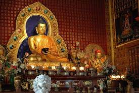

The source of bhuddhism
As we know that the main source of bhuddism is to meditate via yoga and peace and spending some sort of time with mother earth via connecting naturally. The Buddha was said to be critical of worship, in fact. In one scripture (Sigalovada Sutta, Digha Nikaya 31) he encountered a young man engaged in a Vedic worship practice. The Buddha told him important in a responsible, ethical way than to worship anything.
Modes to acheive bhuddism

There are various modes to acheive bhuddism peace :-
MODE TO BHUDDHISM :-- Be a nature person
- regular to yoga
- lovable to everyone
he Second Truth tells us dukkha has a cause. The immediate cause is craving, and the craving comes from not understanding reality and not knowing ourselves. Because we misunderstand ourselves we are riddled with anxiety and frustration. We experience life in a narrow, self-centered way, going through life craving things we think will make us happy.
How to attain to that source
listen carefully with meditation
- yoga
- maturity
- nature
- air
- atmosphere
he prince renounced his worldly life and began a spiritual quest. He sought teachers and punished his body with asc etic practices such as extreme, prolonged fasts. It was believed that punishing the body was the way to elevate the mind and that the door to wisdom was found at the edge of de ath. However, after six years of this, the pri nce felt only frustration. Eventually, he realized that t he path to peace was through mental discipline. At Bodh Ga ya, in the modern India n state of Bihar , he sat in meditation beneath a ficus tree, “the Bodhi tree,” until he awakened